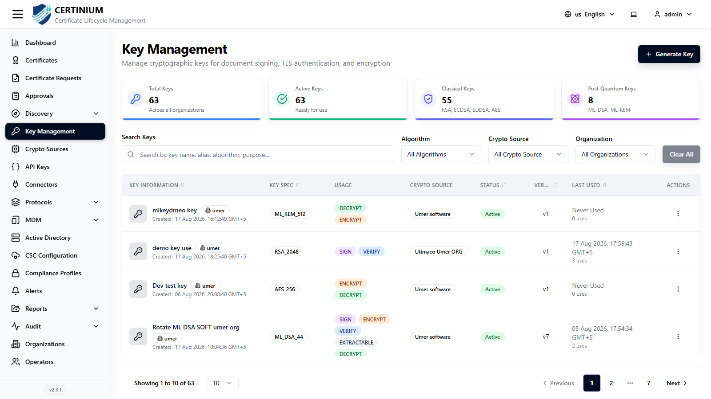
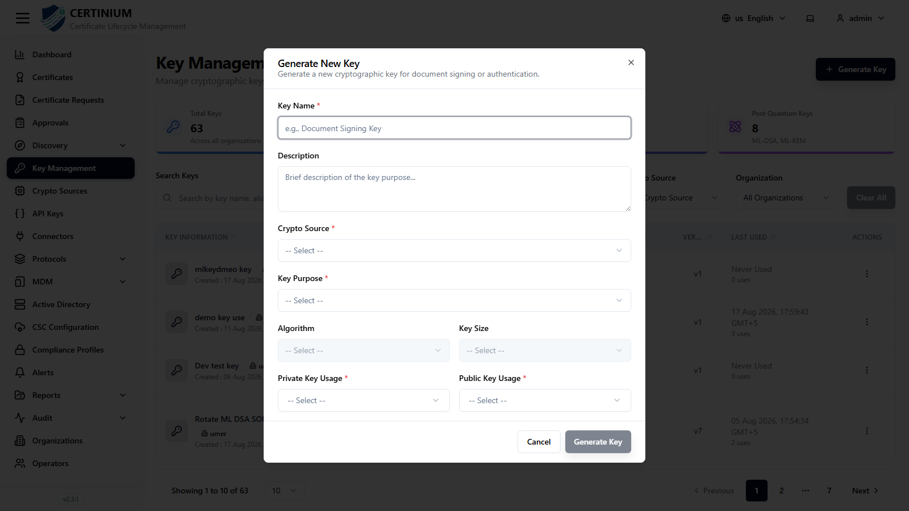

Key Management¶
Key Management is where cryptographic key pairs are generated and tracked. Keys are created on a chosen Crypto Source and are later selected when generating a Certificate Request.
Accessing Key Management¶
From the sidebar, select Key Management.

Key Management overview¶
Summary cards show:
- Total Keys
- Active Keys
- Classical Keys — traditional algorithms (RSA, ECDSA, EdDSA).
- Post-Quantum Keys — quantum-resistant algorithms (e.g. the ML-DSA / Dilithium family).
Search and filter¶
- Search Keys — by key name, alias, algorithm, or purpose.
- Algorithm, Crypto Source, Organization — narrow the list.
- Clear All — resets all filters.
Keys list¶
| Column | Description |
|---|---|
| Key Information | Key name and owning organization. |
| Type | Algorithm and size/curve, e.g. RSA_2048, AES_256, ML_DSA_44, ED25519. |
| Usage | Tags such as SIGN, VERIFY, ENCRYPT, DECRYPT, EXTRACTABLE. |
| Crypto Source | The store the key lives on. |
| Status | Active or Inactive. |
| Version | Key version number — incremented on rotation. |
| Last Used | Timestamp of last use, or "Never Used". |
| Actions | Row-level actions. |
Generating a new key¶
- Click Generate Key (top right).
-
Fill in the form:

- Key Name* — e.g. "Document Signing Key".
- Description
- Crypto Source* — which store (see Crypto Sources) generates and holds the key.
- Key Purpose* — e.g. Signing, Encryption, TLS/Authentication.
- Algorithm — the available options depend on the selected Key Purpose and Crypto Source, and include classical algorithms (RSA, ECDSA, EdDSA) and post-quantum algorithms (the ML-DSA family).
- Key Size — algorithm-dependent (e.g. 2048/3072/4096 for RSA; curve name for ECDSA/EdDSA).
- Private Key Usage and Public Key Usage** — the cryptographic operations each half of the key pair is allowed to perform (sign, verify, encrypt, decrypt, etc.).
-
Click Generate Key to save.
Rotation
Generating a new version of an existing key (rather than a brand-new key) increments its Version number, which is how CLM tracks key rotation history while keeping the same logical key identity for dependent certificates.